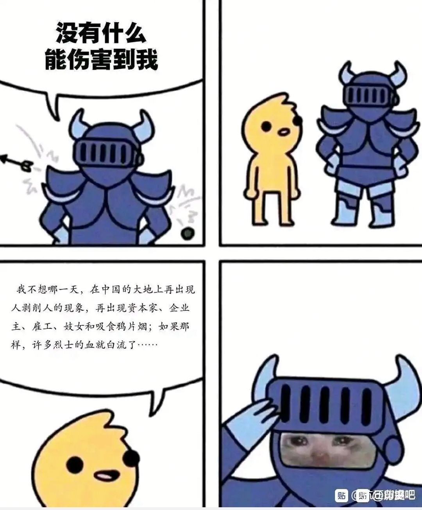
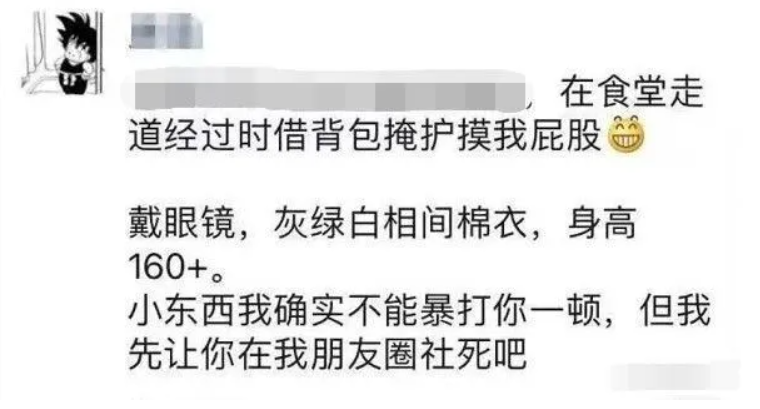
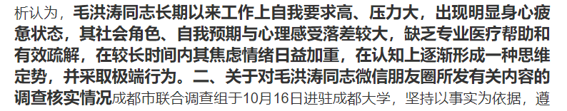
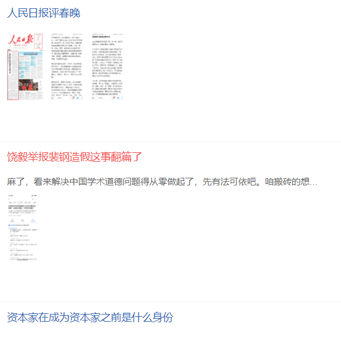

【呜呜呜，我的屈原！】这样的话语突然零碎地出现在互联网的各个角落，说起来，这种“呜呜呜”的格式本身也是一个梗，但是今天的主题是屈原先生。
正如上期所说，网络发展到了一个不同势力内部也在分化和亚文化玩梗圈子产生的时期，这就意味着，必然有更多的信息传播和缝合复读，在某些事件以后一起被创造出来，它是在2020年上半年已经打好根基的副产品。
【抗 压 背 锅 吧】一个电竞讨论社区，主要讨论网游英雄联盟赛事为主的论坛，其前身是【抗压吧】和【背锅吧】，抗压吧的出现主要是因为电竞选手草莓（也有一说认为是WE粉丝对黑WE的人的反击）
也有人说曾经的抗吧就是英雄联盟WE战队的脑残粉聚集地；可见其诞生开始外界评价就不一，背锅吧则认为是讨论英雄联盟及其赛事周边的一个论坛，在如今的网络风评中被称为理性讨论的论坛，
然而，也有一些早年的吧友称其素质极低，由于两个吧都已经封闭，圈外人很难再去准确评判当时的情况。
观测者认为，【抗 吧】早期的历史不可能像是百科中描写的那样理性化，不但是因为早期风评差的缘由，更是很多贴吧老人所说的，在早年的各种大事件中对电竞选手的人身攻击。
当然，部分黑皮也包含着贴吧冲浪乐子人的一些通病。因为相关帖子已经随着吧一起消失，只能从一些老吧友的回忆中瞥见一二，因为带有太多主观部分就不再贴出。
【抗 吧 爆 炸】抗吧在合并后，氛围比以往更差，充斥着人身攻击和互相扣帽子，其吧友也自称为抗蛆，现在还有一个可爱的叫法【蛆宝宝】，现在只要是一些比较著名的部分人所认为的黑皮吧，都可以称之为蛆。
随着左人的网络攻势越加凶猛，一些神友也被缝合进来，构成了左人，宅左，神左的三维立体式宣传，在2020年10月左右开始出现【破防贴】意思是发一些触及人心的图片让人破防，其中充斥着大量和左圈文化相关的破防图片
神左经典用图
这位更是传世经典
再过分的观测者就不放了，大家也能从右下角的水印里感受一些当时传播力度。
随后在吧中相关类的帖子直线增多，最终导致被百度制裁，进入流浪抗吧纪元（虽然很快就回来了）
【清 华 大 学 吧】受到左的影响的抗吧开始一段无组织的群众运动，第一站就是清华大学吧。
有些不明所以的吧友有段时间一直刷到清吧就是因为这个。
【唐 靖】清华美院学生，抗吧送之外号腚姐，在2020年11月20日在朋友圈爆料一名男生摸自己屁股，
自己要让对方“社会性死亡”，随后在查阅监控后，事情突然反转，变成了这名学姐碰瓷学弟，
一时间，清华高素质人才的形象轰然崩塌，无家可归的抗吧吧友冲进了清吧讨要说法，
那段时间，是清吧最有生气的时光。当然实际上，在当时微博b站对她的声讨都有。

【毛洪涛】几乎和清吧事件同步，2020年10月15日随着成大毛书记自杀，他的微信绝笔信引起了轩然大波，
原来是和时任校长王清远有矛盾，认为其犯了错误，滥用权力，自己只得以死明志。
次日，成都市成立调查小组，不久后得出了毛书记压力过大，认识错误的结论，
因其证据不透明不全面，调查组成分可疑和与预期的极大不符，许多网友产生了成大暗箱操作的猜想，
正因如此，大波吧友开始在【成都大学吧】展开爆破。
官方通报
【屈原】部分网友认为，毛书记以死明志的态度和最后真相都不能大白的遗憾，就像战国的屈原，因此称其为屈原。
他们对屈原的哭丧实际是对毛书记的哭丧
【炸弹】炸弹+表情【欢呼】+炸弹，左圈文化中常常使用的暗语，
意思就是发一些不符合时代潮流价值观的社会企图的相关文字和图片，达到对论坛帖子的爆破目的。
因为985大学贴吧特殊的后台，许多吧友在清吧和成吧疯狂发相关文字和照片
（至于是什么内容，感兴趣的人可以在b站相关左圈up评论区留言求助，一定有人会发给你），
贴吧没有办法，最终将相关吧升级为【4级墙】即只有吧内等级达到4级才能发言，随后出现【9级墙】爆破活动才慢慢消散。
经典用图
【北 京 大 学 吧】清吧爆炸以后，虽然抗吧早已恢复，一部分人则习惯了这种冲浪模式，
开始在各大985大学中活动爆破，留下了的人当作很大部分是已经完全接触左圈相关资料，
有一个明确的目标而活动的人群了，他们如今活动在任何没有开权限的吧中
（截至到2021-2-18，已经渗透进入中央财经大学吧）。
而北大吧正是在清吧爆炸后第二个主要活动场所，甚至其吧主和小吧还主动开门迎客。
北大吧现状
观测者评价：贴吧仅仅是一个从2020年十月份开始的舆论大战缩影，因其不大不小的体量被作为典型放出
，像是在b站，数量同样庞大，只是占比小而显得不明显。
从2020下半年开始的网络舆论战不像是一种偶然的事件，腚姐，屈原等等这些表达了不用观点的人对公平正义的向往，
是内外部矛盾到达一个节点而一定会到来的一场节奏，未来只会更大更猛，
观测者暂且不对其发表正确与否的判断，权当记录下来，以供了解历史。
如有错误请评论指出。